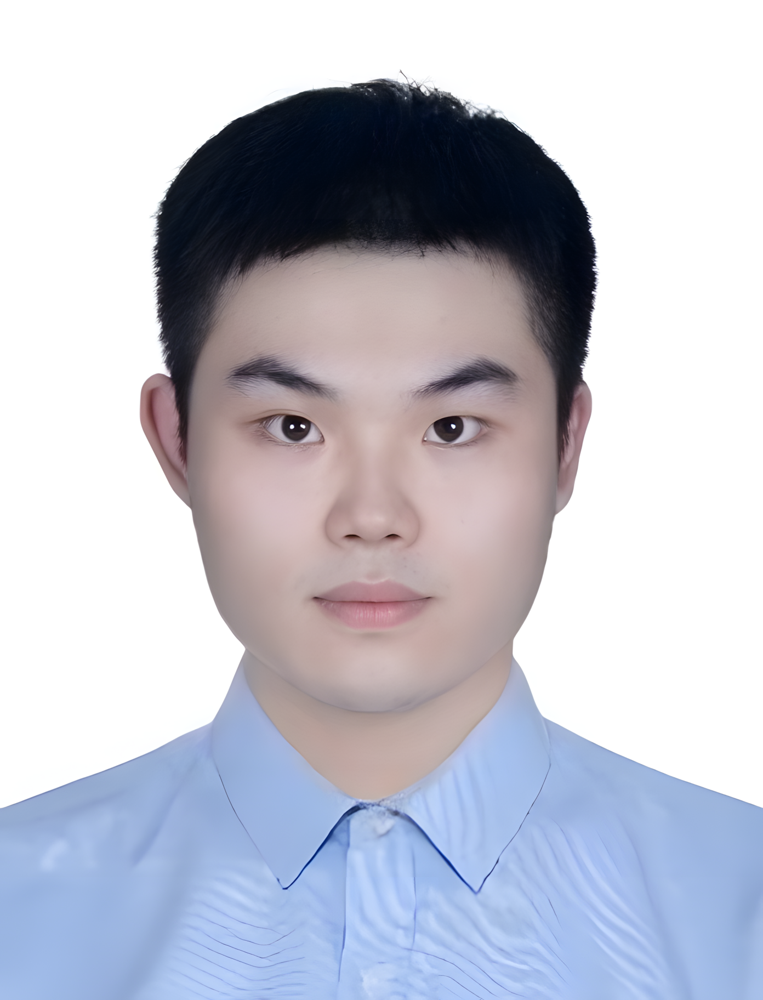

Can Heterogeneous Language Models Be Fused?
We introduce HeteroFusion to combine expertise across heterogeneous language models through topology-based alignment and conflict-aware denoising.
SELF-IMPROVING AGENTS · LIFELONG LEARNING
I'm Shilian Chen, an incoming Ph.D. student in Computer Science and Technology at East China Normal University (ECNU), working with Dr. Keqian Li. I have also worked on language models and intelligent agents at Trip.com Group and Green Valley.
My research focuses on recursive self-improvement, continual learning, and agentic intelligence in real-world environments. We connect model fusion, long-term memory, and lifelong alignment to build AI systems that learn from experience and continually grow their capabilities. Our work appears at EMNLP, AAAI, and Information Processing & Management.

A new chapter with Dr. Keqian Li! We are pursuing recursive self-improvement and continually learning agents that can operate reliably in real-world environments. More to come.
Excited to share our latest work on EduSkillBench. We investigate when procedural skills translate into stronger agent capabilities through systematic evaluation.
Two papers at EMNLP 2026! We introduce HeteroFusion to bridge heterogeneous language models, and PeCL to preserve useful knowledge while protecting sensitive information. Congratulations to our collaborators!
Excited to join Green Valley / Chengyi Intelligent Technology as an LLM algorithm intern. We connect language models with rich domain knowledge through knowledge-grounded reasoning and agentic retrieval.
Our survey of slow-thinking reasoning models appears in the March issue of Information Processing & Management, connecting reinforcement learning, test-time scaling, and structured reasoning.
Thrilled that LifeAlign was presented as an oral at AAAI 2026. We take a step toward lifelong alignment by bringing preference learning and long-term memory together.
Excited to join Trip.com Group as an LLM algorithm intern. We bring intelligent agents into real business workflows, from knowledge-grounded generation to feedback-driven capability improvement.
We introduce Evo-Merging on arXiv: combining expertise from massive model repositories using only API queries.
We introduce HeteroFusion to combine expertise across heterogeneous language models through topology-based alignment and conflict-aware denoising.
We study whether reusable educational agent skills improve LLM performance through matched evaluations with and without skill guidance. We build task-specific rubrics and a reproducible evaluation pipeline across educational tasks.
We develop PeCL, combining token-level differential privacy with privacy-guided memory sculpting to protect sensitive information while retaining useful knowledge.
We introduce LifeAlign to maintain alignment across changing tasks, using focalized preference optimization and consolidation of short-term preferences into long-term memory.
We survey reasoning language models through three connected themes: reinforcement learning, test-time scaling, and structured slow-thinking frameworks.
We propose Evo-Merging, a derivative-free framework that combines black-box model expertise through API queries, sparsity-based denoising, and sign-aware scaling.
The next frontier of AI is intelligence that continues to improve through experience. We are interested in agents that learn from feedback, adapt to changing environments, and make reliable decisions in practical tasks. Our ongoing research explores the foundations of self-improving agentic systems and how to evaluate their capabilities beyond isolated, static benchmarks.
Ongoing research. Further details will be shared with future publications.
Learning should not end after pretraining. We study how language models retain useful knowledge, update preferences, and adapt throughout their lifetime. By connecting memory, alignment, and privacy-aware learning, we aim to build systems that can grow their capabilities while preserving the knowledge and behavior that matter.
Expertise is distributed across an increasingly diverse ecosystem of language models. We investigate how to bring that expertise together across architectures and access constraints. From heterogeneous model fusion to API-based black-box merging, our work seeks to make existing model capabilities more transferable, reusable, and broadly useful.
I am always happy to connect with researchers working on self-improving agents, continual learning, memory, and model fusion. Let's build intelligence that keeps learning.
Email: shilian_chen@stu.ecnu.edu.cn
Location: Shanghai, China